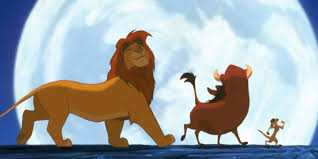
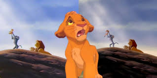

The lion king
-

It is the 32nd Disney animated film, and the produced during a period ,the Disney Renaissance.This work is one of the works that symbolizes the heyday of Disney. I still impress people in various ways, including on the stage.
-

In the Disney Renaissance, Walt Disney Feature Animation returned to producing critically and commercially successful animated films that were mostly based on well-known stories. The Lion King had positive reaction from critics, who praised the film for its music, story, and animation. This film earned initialy $766 million in the world.However,drew some controversy in Japan for its similarities to Osamu Tezuka's animme.